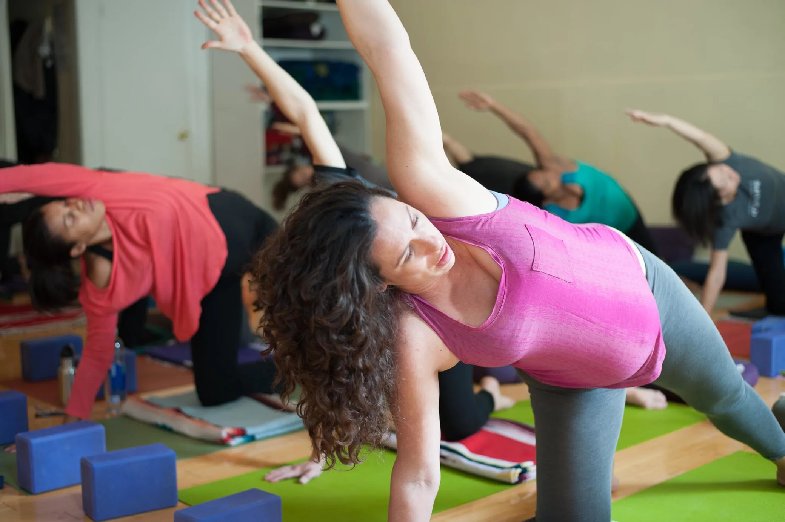

As a senior teacher and a lead teacher trainer at the Prenatal Yoga Center, I’ve taught hundreds of pregnant bodies. Additionally, as a labor support doula, I’ve seen firsthand how a yoga practice can help encourage a more easeful (although not necessarily easy!) birth. I love sharing yoga with students who have diverse bodies and varied movement backgrounds. Yoga has so many tools to offer the pregnant practitioner, especially through meditation, mantra, and pranayama. However, the pregnant body experiences many shifts and changes—some obvious and others not as much—and I encourage the asana practice, and movement in general, to shift with those changes.
During the first trimester, many people feel exhausted—it’s hard work to develop all major systems for a brand-new body!—and about half of pregnant people experience morning sickness or nausea. For those who are too tired and nauseous to practice vinyasa, a restorative practice is a great option. Those who find their energy hasn’t much changed might mindfully make adjustments to a regular practice.
The hormone relaxin, which continues to rise from conception throughout the first trimester, softens the joints, ligaments, and tendons of the body. In addition to the spike in relaxin, the pregnant body also experiences an increase in estrogen, which softens connective tissue, or the fascia. Yogis should remain mindful of overstretching by keeping the body supported rather than exploiting the flexibility. At Prenatal Yoga Center we refer to this as "borrowed flexibility" and encourage our students to strongly focus on alignment. Some prone (belly-down) poses likely still feel fine (low cobra, locust), but as the uterus begins to grow and lift from behind the pubic bone, it’s best to avoid poses that press directly onto the lower abdomen, like bow pose.
This is also a great time to begin to identify any tightness or laxity in the pelvic floor. Those who have a pelvic floor lacking in tone are encouraged to do squats in addition to actively engaging the adductors during poses like warrior 2 or goddess pose. Those who have a pelvic floor with a lot of tone—which includes many advanced practitioners—are better served by practicing internal rotation and forward folds. For many advanced practitioners, it can be hard to give up arm balances and fancy inversions. But too much mula bandha, or tightening of the pelvic floor, can create a hypertonic pelvic floor—if there is too much tone it can make a vaginal birth more challenging. Focusing instead on a pranayama or breath-work practice, especially three-part breath, can help to soften a hypertonic pelvic floor.
In the second trimester, many pregnant people experience increased energy, and most morning sickness has dissipated. We sometimes refer to this as the "honeymoon period" of pregnancy. This is also when most pregnant bodies begin to see a noticeably rounder belly—some refer to this as having "popped." Estrogen has already softened the tissue between rectus abdominis (the six-pack muscles) to make space for the growing uterus. With the increased weight on the abdominals, second trimester is a good time to switch to half-plank instead of full plank. Poses where the abdominals must be active in addition to weight-bearing can increase diastasis (the separation between the abdominals).
Other considerations for the abdominals in second trimester are closed twists and deep backbends. Most practitioners are aware that closed twists compress the uterus (and therefore the baby), but they can also encourage the abdominals to separate. And because the rectus abdominis attaches from the pubic bone to the xiphoid process, overstretching it in deep backbends can further increase the diastasis. Rather than wheel pose or upward-facing dog, I encourage a modified camel (with blocks and a bolster) or standing chest openers to achieve the feeling of openness without the risk of separation.
Third trimester is a time to begin to consider the position of the baby. For those who are hoping for a vaginal birth, there are poses that can help encourage optimal fetal positioning and poses that actually discourage it. Babies are subject to gravity, so that 10-minute headstand is not recommended. Restorative poses lying back—even if the body is elevated—for too long can encourage baby into a posterior position. Practicing poses on all fours can encourage the baby’s spine away from the birth giver’s spine, and many all-fours poses are utilized in labor. I’ve lost count of how many cat, cow, and tabletop positions I’ve seen during birth!
Standing poses are also encouraged in the third trimester. Warriors, chair, and goddess pose can help build strength in the legs and create a feeling of empowerment that carries through to labor.